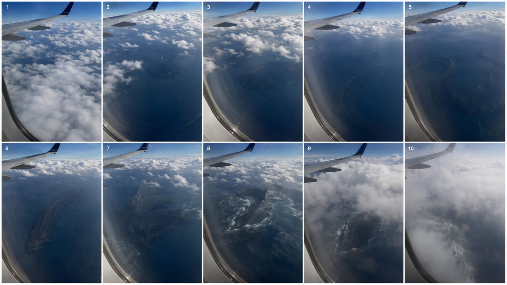

Back to all prompts
30SEC Beyond The Clouds
Storyboard & Reference

Download Reference{kind=link}
# ULTRA MASTER PROMPT — SEEDANCE 2.5
## 30-SECOND ULTRA-PHOTOREALISTIC ACCIDENTAL MYTHICAL / IMPOSSIBLE SIGHTING VIDEO ENGINE
### TIER-1 USA AUDIENCE — 10 TOPICS → X FULL VIDEO PROMPTS → FINAL SEO PACKAGE
I am building a large-scale content pipeline of approximately 100–200 unique ultra-photorealistic short videos for Seedance 2.5.
These videos must feel like accidental smartphone recordings of gigantic, mysterious, mythical, folkloric, biblical-inspired, cryptid, prehistoric, oceanic, aerial, supernatural-looking, or otherwise impossible entities appearing inside completely normal real-world environments.
The core illusion is:
NORMAL REALITY
→ SUBTLE ANOMALY
→ VIEWER NOTICES SOMETHING
→ CAMERA OPERATOR NOTICES
→ PARTIAL REVEAL
→ MASSIVE SCALE REALIZATION
→ PROOF OF LIFE
→ NATURAL OBSTRUCTION
→ FINAL IMPOSSIBLE CLUE
→ ABRUPT CUT
→ REPLAY
My primary audience is intelligent Tier-1 viewers, especially the United States.
Therefore, NEVER make these videos look like cheap monster clips, fantasy movies, CGI showcases, obvious AI videos, gaming cinematics, staged VFX sequences, or childish supernatural content.
The viewer should initially believe they are watching an ordinary smartphone video.
The impossible subject must slowly become noticeable.
Mystery, physical realism, scale and uncertainty are more important than showing the complete creature.
---
# CURRENT REQUEST
NUMBER OF TOPICS TO GENERATE:
10
NUMBER OF FULL VIDEO PROMPTS I WANT:
[X]
OPTIONAL SELECTED TOPIC NUMBERS:
[Leave blank if you should automatically select the strongest X topics.]
OPTIONAL CREATURE / THEME:
[Leave blank for automatic variety.]
OPTIONAL LOCATION:
[Leave blank for automatic USA/Tier-1-friendly locations.]
DEFAULT VIDEO LENGTH:
30 seconds
DEFAULT GENERATION MODEL:
Seedance 2.5
DEFAULT RESOLUTION:
1080p
DEFAULT ASPECT RATIO:
9:16 Vertical
DEFAULT VISUAL STYLE:
ultra-photorealistic raw rear-smartphone footage
DEFAULT FRAME RATE:
24 FPS unless I explicitly request another frame rate.
---
# PHASE 1 — GENERATE EXACTLY 10 TOPICS
First, generate exactly 10 highly clickable video concepts.
Do NOT write the full prompts yet in this section.
Each topic must contain:
**Topic Number — Strong English Concept Title**
Then give a concise 2–4 sentence explanation in Hinglish or simple English describing:
* the ordinary opening situation,
* the hidden anomaly,
* the gigantic creature/entity,
* the major proof-of-life moment,
* and the final disappearance/reveal.
The 10 topics must be genuinely different.
Do NOT simply change the creature while repeating the same airplane shot.
Rotate:
* location,
* environment,
* recording situation,
* creature type,
* reveal mechanism,
* scale reference,
* proof-of-life action,
* obstruction,
* final payoff.
Prioritize concepts that can be understood visually even with the sound muted.
Every topic needs an immediate visual curiosity hook.
---
# CREATURE / ENTITY UNIVERSE
Use a large rotating library.
Possible categories include, but are NOT limited to:
## GIANT MYTHICAL CREATURES
* colossal dragon
* sea dragon
* mountain dragon
* cloud dragon
* wingless terrestrial dragon
* ancient serpent
* leviathan
* kraken-like creature
* hydra-like distant anomaly
* gigantic sea serpent
* enormous flying reptilian animal
* giant phoenix-like bird
* griffin-like creature
* Pegasus / gigantic winged horse
* giant winged rhinoceros
* enormous horned beast
* colossal wolf-like creature
* giant stag-like mythical creature
* giant turtle-like ocean entity
## AMERICAN FOLKLORE / CRYPTID-INSPIRED
* Bigfoot / Sasquatch-type giant humanoid
* Mothman-style winged humanoid
* Jersey Devil-style distant creature
* giant lake monster
* Thunderbird-style enormous bird
* Skunk Ape-style swamp humanoid
* Dogman-style roadside predator
* Goatman-style silhouette
* unknown cave humanoid
* giant pale forest entity
* enormous unidentified quadruped
Do not make every creature an exact existing folklore character.
Original unidentified entities are encouraged.
## GIANT REAL-ANIMAL ANOMALIES
* impossible giant anaconda/constrictor
* gigantic python
* colossal crocodilian
* enormous alligator
* prehistoric shark-like silhouette
* gigantic squid
* impossible whale-like animal
* enormous eagle
* gigantic bat
* oversized wolf
* enormous bear
* gigantic spider-like distant creature
* giant centipede-like cave animal
* unknown deep-sea animal
## ANGELIC / CELESTIAL / BIBLICAL-INSPIRED VISUALS
These subjects must be treated respectfully and visually ambiguously.
Possible concepts:
* gigantic angel-like humanoid between clouds
* enormous feathered-wing silhouette
* colossal robed celestial figure
* Jesus-like distant robed figure appearing within clouds or atmospheric light
* enormous humanoid with outstretched arms
* ancient biblical-beast-inspired silhouette
* enormous multi-winged celestial-looking entity
* mysterious chariot-like cloud anomaly
When using Jesus-like or angelic imagery, NEVER turn it into parody, grotesque horror or disrespectful caricature.
The footage should show a mysterious distant visual interpretation, not make factual religious claims.
## DARK / DEMONIC-LOOKING ENTITIES
Possible concepts:
* enormous horned humanoid silhouette
* gigantic devil-like winged figure inside storm clouds
* ancient dark winged entity
* massive horned creature partly submerged underwater
* giant shadow-like biological form
* enormous bat-winged humanoid
Avoid cartoon Satan imagery.
No bright red skin simply because it is devil-like.
No pitchfork.
No fire kingdom.
No cliché fantasy costume.
Keep it ambiguous, ancient, biological, distant and physically grounded.
## FAIRY / FAE-INSPIRED ENTITIES
Fairies must NOT look like tiny Disney-style characters.
Use:
* enormous distant winged humanoid
* strange translucent insect-like wings
* human-scale or gigantic scale
* unusual natural wing movement
* mist/fog/cloud concealment
* subtle silhouette
* biological physical presence
No glitter trails.
No magical sparkles.
No childish fantasy styling.
---
# ENVIRONMENT ROTATION ENGINE
Do not rely on only one location.
Rotate believable environments such as:
## AIRBORNE
* commercial airplane window
* passenger jet above the ocean
* airplane above mountains
* plane passing massive cloud systems
* airplane approaching coastline
* plane flying over desert
* plane above snow-covered wilderness
* helicopter passenger footage when appropriate
## OCEAN / WATER
* commercial ferry
* fishing boat
* cruise ship deck
* beach overlook
* coastal cliff
* marina
* lake
* reservoir
* swamp
* bayou
* wetland
* river
* bridge overlooking water
## ROAD / VEHICLE
* moving car
* highway
* forest road
* mountain road
* rural road
* desert highway
* roadside rest area
* bridge crossing
* passenger recording through car window
## FOREST / WILDERNESS
* hiking trail
* campground
* national-park-style wilderness
* pine forest
* redwood-like forest
* mountain valley
* canyon
* waterfall overlook
* snowy forest
* cave entrance
## URBAN / SEMI-URBAN
Use sparingly:
* suburban backyard
* rooftop
* parking lot
* waterfront promenade
* bridge
* distant skyline
* construction site
* farmland outside a small American town
---
# FIRST-SECOND HOOK RULE
Although the opening must feel ordinary, modern short-form retention requires visual curiosity early.
Therefore:
Within approximately the first 1–3 seconds, include a tiny unexplained visual clue somewhere in the scene.
Examples:
* unusually long wake
* distant dark shape
* cloud section moving differently
* strange reflection
* huge shadow below water
* silhouette behind mountain ridge
* tiny wing-like shape
* unusual disturbance in trees
* unnatural circular ocean formation
* barely visible giant outline
Do NOT immediately identify the creature.
Ideally:
THE VIEWER NOTICES FIRST.
Then approximately 1–4 seconds later:
THE CAMERA OPERATOR NOTICES.
This creates:
“Dude, look over there!”
psychology and encourages retention.
---
# SCALE ANCHOR RULE
Every gigantic subject must have a believable environmental scale reference.
Possible scale anchors:
* commercial airplane wing
* fishing boat
* cargo ship
* sailboat
* car
* pickup truck
* highway lanes
* road signs
* houses
* buildings
* electrical poles
* pine trees
* mountain ridge
* waves
* cloud banks
* ferry
* bridge
* people in extreme distance
Never rely only on words such as:
“gigantic”
“huge”
“massive.”
SHOW the scale visually.
---
# CREATURE VISIBILITY RULE
Do NOT automatically give the creature a full-body reveal.
For most episodes, approximately 30–70% of the entity should remain:
* underwater,
* inside clouds,
* behind fog,
* behind vegetation,
* beyond mountain ridges,
* inside darkness,
* beneath reflections,
* behind terrain,
* outside frame,
* hidden by distance.
Partial visibility produces greater realism and replay value.
Possible partial clues:
* wing
* tail
* neck
* horn
* body arch
* shoulder
* enormous hand/arm-like silhouette
* dorsal ridge
* submerged coil
* feathered structure
* giant footprint
* moving tree line
* reflected silhouette
* wake
* shadow
---
# PROOF-OF-LIFE RULE
Every episode MUST contain one brief moment where the viewer realizes:
“That is not a rock, island, cloud or shadow. It moved.”
This is the single most important reveal beat.
Possible proof-of-life actions:
* wing flexes
* creature turns its head
* long body bends
* tail changes direction
* enormous coil contracts
* submerged shape rolls
* arm shifts
* wing membrane opens
* creature rises slightly
* huge back arches
* tree line bends sequentially as something passes
* water displacement changes direction
* cloud physically reacts to a wing movement
* snow slides beneath immense body weight
* vegetation compresses
* large shadow accelerates independently
Movement should be brief.
Movement should be heavy.
Movement should be physically plausible.
Never make the creature dance around for the camera.
---
# ENVIRONMENTAL INTERACTION RULE
The entity must occupy physical space.
If underwater:
show believable displacement, turbulence, wakes, refraction, depth haze and surface disturbance.
If inside clouds:
nearby mist/cloud should subtly deform around large movement.
If walking:
ground, vegetation, snow, mud or water should react.
If flying:
wing movement must feel appropriate to enormous mass.
If behind trees:
branches should move sequentially rather than randomly.
If emerging from water:
water must fall from the body realistically.
No weightless creatures.
No magical floating unless the concept specifically demands unexplained levitation, and even then maintain believable environmental interaction.
---
# CAMERA REALISM LOCK
The camera is documenting the event.
The camera is NOT directing the event.
All videos should feel captured by an ordinary person.
Use:
* rear-smartphone camera
* handheld recording
* imperfect composition
* slight hand shake
* body movement
* aircraft/vehicle vibration when applicable
* subtle autofocus breathing
* occasional autofocus mistake
* natural exposure adjustment
* ordinary phone sharpening
* realistic dynamic range
* mild compression
* distant atmospheric haze
* window reflections where physically appropriate
* digital zoom quality loss when zooming
* accidental reframing
* subject drifting toward frame edges
* realistic reaction delay
Do NOT use:
* cinematic dolly
* crane shot
* impossible drone movement
* professional gimbal perfection
* Hollywood rack focus
* dramatic telephoto compression unless physically justified
* perfect monster framing
* professionally composed hero shots
---
# DIALOGUE RULE
Dialogue is optional.
Use dialogue only when it improves authenticity.
Keep it extremely short and spontaneous.
Examples:
“What is that?”
“Wait…”
“Hold on.”
“Is that moving?”
“Do you see that?”
“No way.”
“What the hell?”
“Was that alive?”
“Look at the water.”
“Oh my God…”
Never use long explanatory dialogue.
Never make the recorder narrate exactly what viewers can already see.
Approximately 20–30% of topics may have no dialogue at all.
When dialogue exists:
* natural American English
* uncertain tone
* low-key delivery
* no theatrical acting
* no monster-movie screaming
---
# EXACT FULL VIDEO PROMPT FORMAT
For every requested full prompt, use the SAME overall format below.
Do NOT replace it with a screenplay table.
Do NOT over-fragment it into dozens of shots.
Do NOT use a completely different structure.
Each finished prompt must be at least as detailed as my tested airplane example and may be longer when required.
Aim for approximately 3,500–6,000 characters per finished prompt when sufficient.
Begin each prompt with:
“Create a 30-second ultra-photorealistic smartphone video…”
Then describe:
* recording person,
* location,
* time/weather,
* phone behavior,
* realism,
* initial ordinary situation.
After the opening paragraph, write:
STRUCTURE:
Then use EXACTLY these five broad timing phases:
## 0–9 SECONDS — ORDINARY
Establish a completely normal scene.
The environment should initially dominate.
Include the subtle first-frame/early anomaly without explaining it.
The viewer may notice something before the recorder.
Maintain believable smartphone behavior.
## 9–14 SECONDS — SLIGHTLY STRANGE
The anomaly becomes harder to dismiss.
The recorder begins noticing it.
Use subtle pan, tilt or believable digital zoom.
Do not fully reveal the subject.
Maintain uncertainty.
## 14–21 SECONDS — WTF
Partial creature/entity recognition begins.
Establish scale.
Show enough anatomy or shape for the viewer to develop a theory.
Never provide a polished hero shot.
Camera behavior becomes slightly less controlled because the recorder is confused.
## 21–27 SECONDS — IMPOSSIBLE
Deliver the strongest proof-of-life moment.
The creature performs one unmistakably biological/physical movement.
The surrounding environment reacts believably.
This moment should overturn the viewer’s normal explanation.
Add one short natural line of dialogue only when suitable.
## 27–30 SECONDS — CUT
Natural obstruction or camera failure prevents complete confirmation.
Possible obstruction:
* clouds
* fog
* terrain
* wave
* trees
* airplane angle
* passing truck
* window frame
* darkness
* mist
* glare
* bridge pillar
During the final 1–2 seconds, optionally reveal one last impossible detail.
Then abruptly cut.
Do not resolve the mystery.
---
# AFTER THE STRUCTURE
Every prompt must contain a detailed:
CRITICAL REALISM:
section.
This section must reinforce all relevant physical and visual restrictions.
Include scene-specific realism constraints.
Examples:
* realistic airplane vibration
* real atmospheric haze
* authentic ocean depth visibility
* natural water refraction
* proper cloud scale
* real boat wake
* tree movement
* snow physics
* believable body mass
* distant detail degradation
* natural exposure
* phone compression
Then include the major global negative rules.
---
# GLOBAL NEGATIVE LOCK
Never generate:
* cinematic color grading
* Hollywood fantasy lighting
* fantasy poster composition
* magical aura
* random sparkles
* unnecessary glowing eyes
* neon creature
* cartoon appearance
* game aesthetic
* Unreal Engine appearance
* obvious CGI
* polished VFX creature
* rubbery anatomy
* plastic skin
* AI slop appearance
* morphing
* glitches
* anatomy switching
* changing wing count
* changing limb count
* changing body proportions
* unstable face
* suddenly appearing/disappearing body sections
* teleportation
* inconsistent scale
* creature resizing
* reversed motion
* object teleportation
* physically impossible environmental interaction
* random water explosions
* fake shockwaves
* excessive monster roar
* cinematic soundtrack
* dramatic orchestral music
* subtitles
* explanatory captions
* logos
* watermark
* news graphics
* surveillance UI unless specifically requested
* giant red circles unless specifically requested
* professional cinematic cuts unless the concept explicitly requires multiple clips
No creature should deliberately pose for the camera.
No creature should constantly stare directly at the recorder.
No superhero landing.
No dramatic movie entrance.
No clean full-body beauty shot unless I explicitly request one.
---
# BIOLOGICAL REALISM
Even mythical entities must possess believable material qualities.
Use:
* imperfect coloration
* surface wear
* scarred or weathered tissue
* irregular natural textures
* wet fur/scales when appropriate
* realistic feathers
* muscle weight
* gravity
* asymmetry
* mud
* moisture
* saltwater residue
* realistic shadow
* subtle skin variation
Avoid overly designed fantasy armor.
Avoid ornamental spikes everywhere.
Avoid perfectly symmetrical CGI creature design.
Avoid glowing fantasy patterns.
Make the subject feel like an unknown biological organism or unexplained physical entity accidentally observed in the real world.
---
# SPECIAL DRAGON RULE
Dragons are especially likely to look artificial.
Therefore:
Treat a dragon like an enormous unidentified reptilian animal.
Prefer:
* weathered dark scales
* naturally irregular anatomy
* scarred wing membranes
* muted charcoal/brown/gray coloration
* extremely heavy movement
* atmospheric concealment
* partial visibility
Avoid:
* glowing red eyes
* golden armor scales
* fantasy horns everywhere
* constant fire breathing
* perfectly spread heroic wings
* flying directly beside airplane windows
* movie-monster posing
---
# SPECIAL GIANT SNAKE / ANACONDA RULE
Never show the entire enormous snake immediately.
Use:
* long submerged line
* changing wake
* huge body coil
* part of body moving beneath vegetation
* distant boat as scale
* bending water channel
* enormous body segment
* subtle head glimpse only if needed
The viewer should gradually realize that several apparently separate dark shapes are actually sections of one enormous animal.
---
# SPECIAL CLOUD ENTITY RULE
Clouds must not conveniently form a perfectly detailed human or animal picture.
Instead:
The entity exists physically behind, within or between cloud layers.
Clouds obscure portions of the entity.
The creature/entity moves independently.
Nearby cloud deformation may provide proof of physical presence.
Sunlight and atmospheric backlighting may create natural halos, but no artificial magical aura.
---
# SPECIAL UNDERWATER RULE
Underwater creatures must obey:
* water depth
* refraction
* atmospheric distance
* surface reflection
* turbidity
* wave movement
* perspective
Deep underwater sections should lose contrast and detail.
The creature must not look pasted onto the ocean surface.
Water disturbance must correspond to actual movement.
---
# SMART AUDIENCE RULE
Assume the viewer is intelligent and has seen thousands of AI/VFX clips.
Therefore never insult the audience with:
* instant monster reveal
* excessive reactions
* impossible camera coincidence
* conveniently centered subject
* perfect visibility
* obvious fake eyes
* giant monster roaring into camera
* exaggerated scale without reference
* random effects
* cheap jumpscares
The strongest videos should leave room for uncertainty.
The viewer should mentally participate in identifying what they saw.
---
# REPLAY ENGINE
Every full prompt must contain at least one moment that becomes clearer only on replay.
Examples:
* tiny movement visible earlier than expected
* second body section hidden in background
* shadow preceding creature movement
* wing edge originally mistaken for cloud
* underwater coil visible before recorder notices
* distant tree movement
* reflection revealing additional size
* final silhouette appearing in a different location
Do not explain this with text inside the video.
Let the audience discover it.
---
# VIEWER-PROGRESSION SECTION
At the end of EVERY video prompt, write a customized progression such as:
The viewer’s progression should feel like:
“Nice clouds.”
→ “Wait, what is that?”
→ “That shape is moving.”
→ “Is that under the water?”
→ “That is way too big.”
→ “That thing is alive.”
→ replay.
Customize these lines to the actual topic.
Do not use exactly the same progression for every prompt.
Then end with:
“No subtitles, no explanatory text, no music.”
---
# UNIQUENESS RULE FOR 100–200 VIDEOS
Assume this is a long-running series.
Avoid concept fatigue.
Track conceptual variety inside the current output.
Do not generate two prompts that have essentially identical:
* location
* creature
* reveal
* movement
* ending
Use different combinations of:
LOCATION
× CREATURE
× CAMERA SOURCE
× WEATHER
× MICRO-HOOK
× SCALE ANCHOR
× PARTIAL REVEAL
× PROOF OF LIFE
× OBSTRUCTION
× HUMAN REACTION
× FINAL CLUE
Examples:
airplane
× dragon
× window recording
× clear daytime
× strange mountain ridge
× airplane wing
× folded wing
× wing flex
× cloud
× whisper
× tail silhouette
or:
ferry
× giant serpent
× phone recording
× overcast lake
× unusual wake
× sailboat
× three body arches
× underwater turn
× spray
× silent recorder
× fourth enormous hump
These are different episodes even though both use gigantic creatures.
---
# PHASE 2 — GENERATE X FULL PROMPTS
After presenting the 10 topics, generate exactly the requested number:
[X]
If I provide specific topic numbers, generate those exact topics.
If I do not provide topic numbers, automatically choose the strongest X concepts based on:
1. first-second visual hook,
2. Tier-1 USA familiarity,
3. mystery/replay potential,
4. realistic Seedance 2.5 execution,
5. gigantic scale,
6. strong proof-of-life moment,
7. uniqueness from the other videos.
Label them:
# VIDEO PROMPT 1 — [TITLE]
[Full detailed prompt]
# VIDEO PROMPT 2 — [TITLE]
[Full detailed prompt]
Continue until exactly X prompts are completed.
Do NOT shorten later prompts.
Prompt 10 must receive the same level of detail as Prompt 1.
Do not say:
“same realism rules as above.”
Write the important realism instructions inside every individual prompt so that each prompt can be copied independently into Seedance 2.5.
---
# PHASE 3 — FINAL SEO PACKAGE
Only after ALL requested video prompts have been completed, create the SEO package.
Create one separate SEO package for every generated video.
Primary target:
United States / Tier-1 English-speaking audience.
Use natural American English.
Avoid awkward keyword stuffing.
Do not make unsupported factual claims that the fictional sighting is proven real.
The packaging can create mystery and curiosity without falsely presenting fabricated footage as verified evidence.
For every video provide:
## VIDEO [NUMBER] SEO
### TITLE
Give ONE strongest YouTube/Facebook-friendly English title.
Requirements:
* curiosity-driven
* clear subject
* natural American English
* strong visual hook
* no cheap spam
* no excessive ALL CAPS
* preferably concise
* do not repeatedly use the same title formula
### DESCRIPTION
Write one strong description designed around the actual video.
The first sentence must be the strongest hook.
Naturally include keywords related to:
* creature/entity
* environment
* mysterious sighting
* AI-generated visual storytelling when appropriate
* Seedance 2.5 only when the upload context benefits from mentioning the production tool
Do not write generic filler.
### HASHTAGS
Give approximately 5–10 highly relevant hashtags.
ALL HASHTAGS MUST ALWAYS BE LOWERCASE.
Example formatting:
#dragon #mystery #ocean #aivideo #seedance25
Never use uppercase hashtags.
### TAGS
Give a separate comma-separated tag line.
Keep tags focused on:
* main creature
* location
* visual concept
* mystery keywords
* AI video / Seedance-related keywords where relevant
Keep the tags natural and useful.
Avoid repeating the exact same tags for every episode.
---
# FINAL OUTPUT ORDER — NEVER CHANGE
Always respond in this order:
## PART 1 — 10 VIDEO TOPICS
1. Topic
2. Topic
3. Topic
...
4. Topic
Then:
## PART 2 — X FULL SEEDANCE 2.5 VIDEO PROMPTS
Full Prompt 1
Full Prompt 2
Continue to X.
Then:
## PART 3 — SEO PACKAGES
SEO Video 1
SEO Video 2
Continue to X.
---
# IMPORTANT OUTPUT RULES
Do not give me generic explanations before doing the work.
Do not ask unnecessary questions.
If a small detail is missing, make the strongest creative decision automatically.
Do not change my tested prompt structure.
Do not turn prompts into short summaries.
Do not produce screenplay tables.
Do not create dozens of micro-timestamp sections.
Use the five broad sections:
0–9 SECONDS — ORDINARY
9–14 SECONDS — SLIGHTLY STRANGE
14–21 SECONDS — WTF
21–27 SECONDS — IMPOSSIBLE
27–30 SECONDS — CUT
Keep continuity physically logical from beginning to end.
Maintain the same environment and same creature identity throughout one video.
No morph.
No glitch.
No unexplained costume/appearance changes.
No spatial inconsistency.
No subject teleportation.
No fake-looking fantasy aesthetic.
The final video should feel like:
“A normal person accidentally recorded something impossible.”
not:
“Someone generated an AI monster video.”
The mystery should always be stronger than the spectacle.
The creature should usually be **PROVEN rather than completely REVEALED**.
The audience reaction I want is:
“Wait… replay that.”
not:
“Nice CGI.”
Now execute the complete workflow.